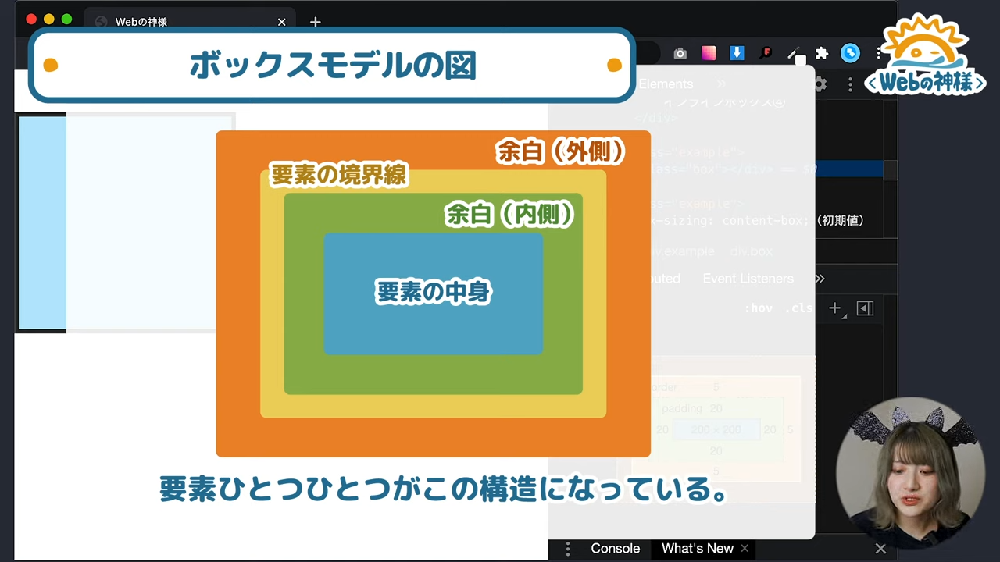
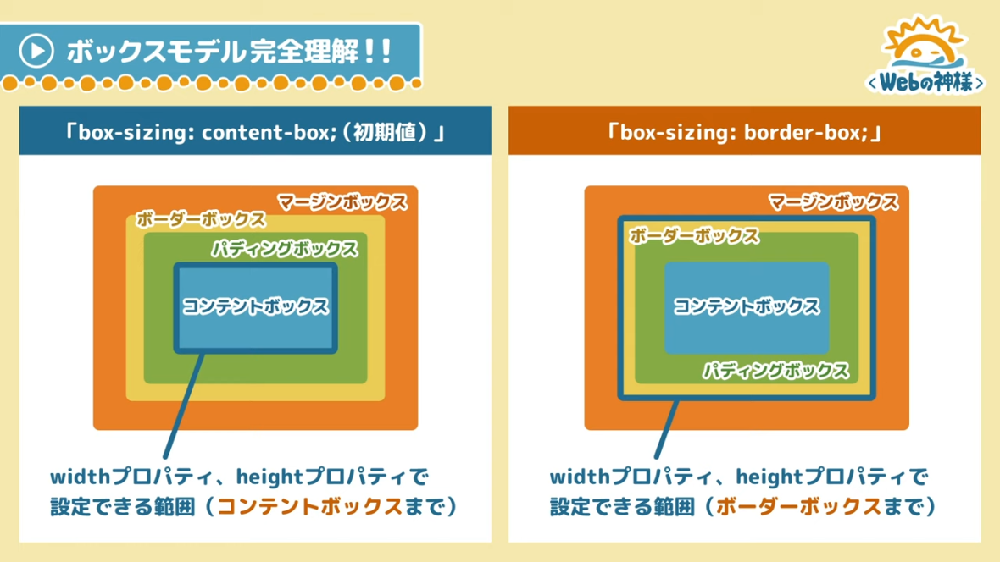

2020/11/01
CSSのボックスモデル、「box-sizing: border-box;」など…ちゃんと理解できてますか？ 30分で、ボックスモデルのあれこれを完全解説しました！
＜目次＞
HTML要素は、どの要素も「ボックス」と呼ばれる四角形の領域を持っている。
ボックスには2種類
ブロックボックス/インラインボックス
それぞれ配置する時の動き方など、特性が異なる。
ボックスの性質の違い１
幅と高さを指定できるか？
ブロックボックスは幅高さの指定ができるが、インラインボックスは中の要素に左右されるので、幅や高さの指定はできない。
ボックスの性質の違い２
改行して表示されるか?
ブロックボックスは横幅いっぱいを確保してしまうので、余白があっても、横並びにならない。（つまり改行されてしまう）
インラインボックスは要素で横幅が決まるため、横幅一杯になるまで横に並べて表示する。横幅一杯になったら改行される。
displayプロパティの値とボックスの種類
「display: block;」→ ブロックボックス
「display: inline;」→インラインボックス
例)「display: block;」なのでブロックボックス
ブロックボックスとして表示されるので、要素に幅と高さを指定できる、必ず改行して縦に並ぶ
displayプロパティはどのようなボックスを生成するかを決めるプロパティ
cssにおいて、要素の１つ１つはボックス構造に基づいた4つの領域で構成されているという考え方。（要素の中身、余白、境界線）
boxは内側から「content-box」,「padding-box」,「border-box」,「margin-box」となっている。
要素の中身を表示するボックス。要素の指定をしなければ、要素の中身（テキストや画像など）を基準とする。
要素に背景色を指定したり、要素の一部としての余白をつける。
要素本体はどこまで？
「コンテントボックス」~「ボーダーボックス」までの領域が要素本体になる。（背景色がつく領域がここまで）
「パディングボックス」と「マージンボックス」の境界線の領域。
またボーダーボックスも要素の一部とし要素本体に含まれる。
要素本体の領域には含まれない、隣の要素との配置、余白を設定するのにつかう。
マージンの相殺
ブロックボックスの要素が縦方向に並んでいる場合、どちらかのmarginプロパティのうち、大きい値が採用されて余白が空く。
※「display :inline;」,「display :inline-block;」では起こらない
box-sizingプロパティとは？
要素の幅と高さをどのように計算するかを設定する。
設定できる値は2種類のみ
「content-box（初期値）」/「border-box」
「box-sizing: content-box;(初期値)」
widthプロパティ、heightプロパティで決められるのは「コンテントボックス」の領域である。
デバイスの横幅いっぱいに（width=100%）指定した場合、
box-sizing: content;について 15:56
box-sizing: border-box;について 17:18
paddingやborderの大きさを変更しても表示が崩れたりせずに自動で調整してくれるので便利。
ボックスモデルのイメージがすぐにできるようにしましょう。
widthとheightの指定できるボックス部分を「コンテントボックス」、「ボーダーボックス」と変えられる